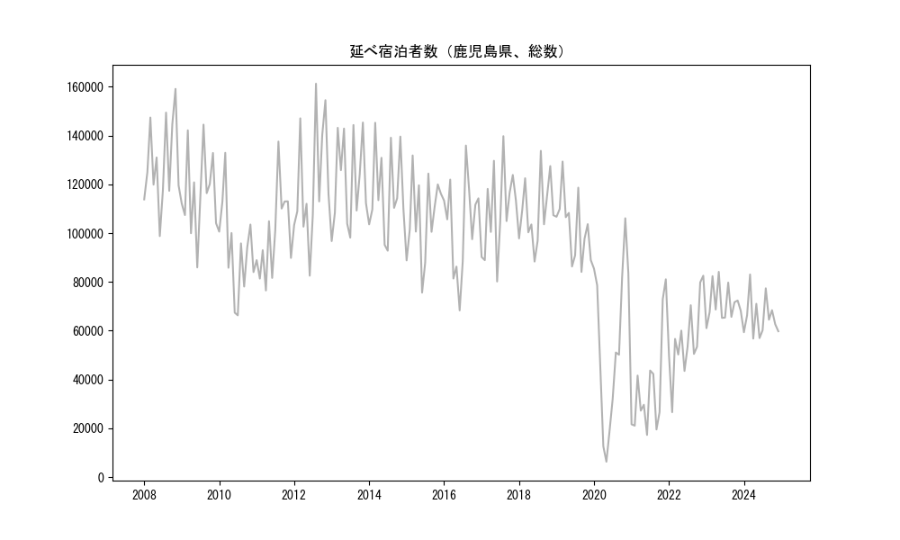
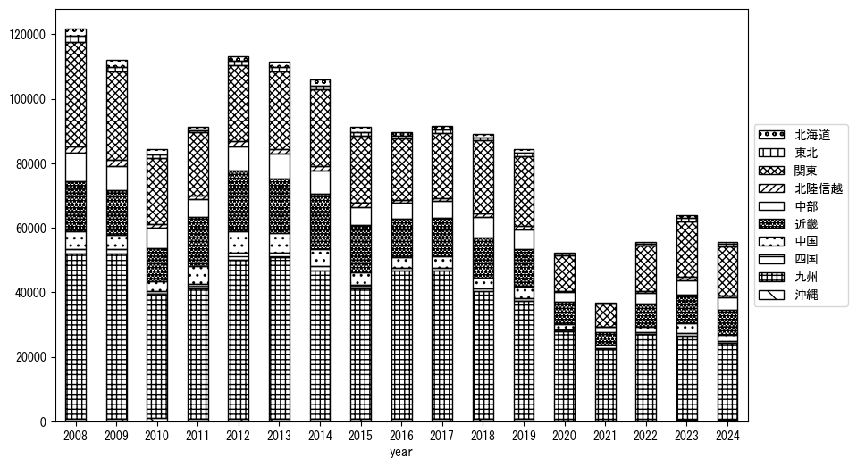

-
トップ
-
鹿児島県
鹿児島県
１．延べ宿泊者（総数）の推移
時系列グラフ

図１：鹿児島県内の従業員数100人以上の宿泊施設での延べ宿泊者数（国外、居住地不詳を含む総数）。
基本統計量
表１：従業員数100人以上の宿泊施設での延べ宿泊者の総数（国外、および居住地不詳を含む）に関する基本統計量。単位は人泊。平均は１か月あたりの平均値を表す。図１に対応。
| 2008年 |
128,644 |
17,873 |
98,784 (6月) |
159,156 (11月) |
| 2009年 |
116,741 |
17,083 |
85,946 (6月) |
144,508 (8月) |
| 2010年 |
93,471 |
18,931 |
66,298 (7月) |
132,951 (3月) |
| 2011年 |
99,249 |
17,531 |
76,496 (4月) |
137,555 (8月) |
| 2012年 |
120,769 |
24,161 |
82,547 (6月) |
161,282 (8月) |
| 2013年 |
121,196 |
18,877 |
96,737 (1月) |
145,369 (11月) |
| 2014年 |
117,027 |
17,583 |
92,793 (7月) |
145,274 (3月) |
| 2015年 |
106,492 |
16,888 |
75,619 (6月) |
131,872 (3月) |
| 2016年 |
103,548 |
19,472 |
68,315 (6月) |
135,932 (8月) |
| 2017年 |
109,229 |
17,716 |
80,166 (6月) |
139,772 (8月) |
| 2018年 |
108,907 |
13,529 |
88,352 (6月) |
133,748 (8月) |
| 2019年 |
102,598 |
13,645 |
84,101 (9月) |
129,370 (3月) |
| 2020年 |
54,408 |
32,663 |
6,275 (5月) |
106,102 (11月) |
| 2021年 |
37,028 |
20,820 |
17,249 (6月) |
81,062 (12月) |
| 2022年 |
56,411 |
15,466 |
26,580 (2月) |
82,560 (12月) |
| 2023年 |
71,005 |
7,372 |
61,025 (1月) |
84,134 (5月) |
| 2024年 |
65,534 |
8,235 |
56,765 (4月) |
83,059 (3月) |
２．宿泊者数の重心（年平均の推移）
図２：鹿児島県内の従業員数100人以上の宿泊施設での延べ宿泊者数（国外、居住地不詳を除く）の重心（年平均の推移）。
全画面表示
重心の前年平均からの移動距離と方位、および緯度・経度
表２：重心の前年平均からの移動距離と方位、および緯度・経度。図２に対応。
| 2008年 |
— |
— |
34.2592 |
134.6135 |
| 2009年 |
西南西 |
28.8km |
34.1205 |
134.3495 |
| 2010年 |
南南西 |
10.4km |
34.0346 |
134.3041 |
| 2011年 |
西 |
17.4km |
34.0405 |
134.1160 |
| 2012年 |
東北東 |
7.5km |
34.0776 |
134.1846 |
| 2013年 |
南南東 |
1.8km |
34.0616 |
134.1888 |
| 2014年 |
東北東 |
13.5km |
34.0974 |
134.3290 |
| 2015年 |
南南西 |
3.1km |
34.0718 |
134.3170 |
| 2016年 |
南西 |
50.1km |
33.7928 |
133.8906 |
| 2017年 |
東北東 |
7.3km |
33.8268 |
133.9576 |
| 2018年 |
東北東 |
48.8km |
34.0346 |
134.4234 |
| 2019年 |
北東 |
5.3km |
34.0648 |
134.4676 |
| 2020年 |
西南西 |
124.4km |
33.4746 |
133.3262 |
| 2021年 |
南南西 |
6.8km |
33.4164 |
133.3032 |
| 2022年 |
東北東 |
100.9km |
33.9139 |
134.2144 |
| 2023年 |
北東 |
50.0km |
34.1650 |
134.6642 |
| 2024年 |
南西 |
10.5km |
34.1104 |
134.5714 |
運輸局別延べ宿泊者数
時系列（年平均）

図３：鹿児島県内の従業員数100人以上の宿泊施設での１か月あたり平均延べ宿泊者数（国外、居住地不詳を除く）の運輸局別内訳。
寄与度（前年からの変化率に対する）
 図４：鹿児島県内の従業員数100人以上の宿泊施設での運輸局別延べ宿泊者数（国外、居住地不詳を除く）から求めた寄与度。
図４：鹿児島県内の従業員数100人以上の宿泊施設での運輸局別延べ宿泊者数（国外、居住地不詳を除く）から求めた寄与度。
３．宿泊者数の重心（月別）
図５：鹿児島県内の従業員数100人以上の宿泊施設での延べ宿泊者数（国外、居住地不詳を除く）の重心（月別）。観測期間は2008年1月から2024年12月まで。
全画面表示
全期間（2008年1月～2024年12月）の平均と月別平均の比較
表３：全期間の平均から月別平均までの移動距離と方位、および緯度・経度。図５に対応。
| 全期間 |
— |
— |
33.9743 |
134.1895 |
| 1月 |
南西 |
20.4km |
33.8583 |
134.0181 |
| 2月 |
東北東 |
42.5km |
34.1716 |
134.5846 |
| 3月 |
北東 |
40.7km |
34.2251 |
134.5118 |
| 4月 |
北東 |
24.5km |
34.1194 |
134.3898 |
| 5月 |
西 |
2.9km |
33.9719 |
134.1578 |
| 6月 |
南西 |
14.9km |
33.8864 |
134.0678 |
| 7月 |
南西 |
34.9km |
33.7625 |
133.9099 |
| 8月 |
南西 |
54.5km |
33.6665 |
133.7304 |
| 9月 |
西南西 |
11.3km |
33.9459 |
134.0717 |
| 10月 |
北東 |
17.9km |
34.0778 |
134.3376 |
| 11月 |
北東 |
21.4km |
34.1005 |
134.3648 |
| 12月 |
南西 |
9.4km |
33.9054 |
134.1295 |
運輸局別延べ宿泊者数
月別平均（2008年1月～2024年12月）
 図６：鹿児島県内の従業員数100人以上の宿泊施設での延べ宿泊者数（国外、居住地不詳を除く）の運輸局別内訳（月別）。
図６：鹿児島県内の従業員数100人以上の宿泊施設での延べ宿泊者数（国外、居住地不詳を除く）の運輸局別内訳（月別）。
寄与度（全期間の平均から月別平均への変化率に対する）
 図７：鹿児島県内の従業員数100人以上の宿泊施設での運輸局別延べ宿泊者数（国外、居住地不詳を除く）から求めた寄与度（月別）。
図７：鹿児島県内の従業員数100人以上の宿泊施設での運輸局別延べ宿泊者数（国外、居住地不詳を除く）から求めた寄与度（月別）。
４．データのダウンロード
出典：観光庁「宿泊旅行統計調査」に収録された「施設所在地、居住地別延べ宿泊者数（従業員数100人以上の施設）」
国土地理院「白地図（地理院タイル）」（図２と図５）